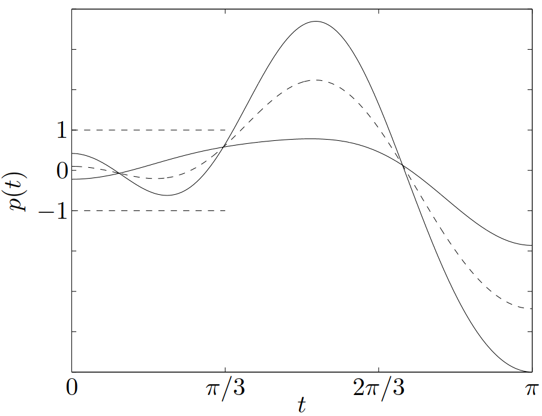
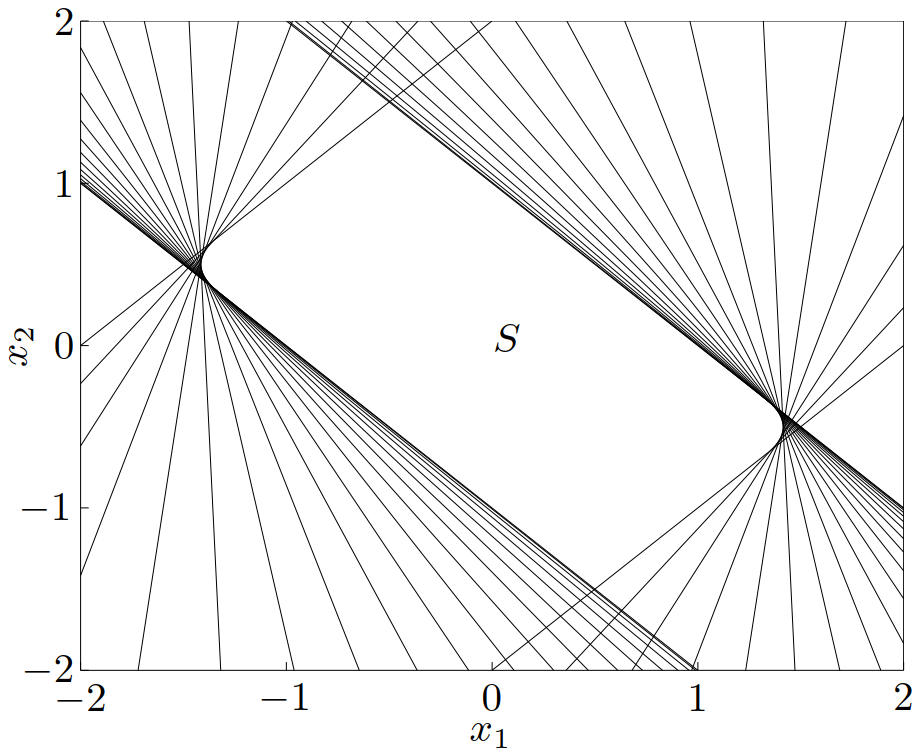

Josh's Note — 凸优化
Part 1.3 凸集—保凸运算
$ $ 本文将描述一些保凸运算，利用保凸运算可以使用凸集构造出其他凸集。这些运算与Part 1.2 凸集—一些重要的凸集中描述的凸集的简单例子一起构成了凸集的演算，可以用来确定或构建集合的凸性。
1. 交集
交集运算是保凸的：如果 \(S_1\) 和 \(S_2\) 是凸集，那么 \(S_1 \cap S_2\) 也是凸集。这个性质可以扩展到无穷个集合的交：如果对于任意 \(\alpha\in A\)，\(S_\alpha\) 都是凸的，那么 \(\displaystyle \bigcap_{\alpha \in A} S_\alpha\) 也是凸集。（子空间、仿射集合和凸锥对与任意交运算也是封闭的。）举一个简单的例子，多面体是半空间和超平面（它们都是凸集）的交集，因而是凸的。
举例 半正定锥 \(\mathbf{S}^n_+\) 可以表示为，
\[ \bigcap_{z\ne 0} \left\{ X \in \mathbf{S}^n\ \middle|\ z^\mathrm{T}Xz \geqslant 0 \right\} \]
对于任意 \(z\ne 0\)，\(z^\mathrm{T}Xz\) 是关于 \(X\) 的（不恒等于零的）线性函数，因此集合
\[ \left\{ X \in \mathbf{S}^n\ \middle|\ z^\mathrm{T}Xz \geqslant 0 \right\} \]
实际上就是 \(\mathbf{S}^n\) 的半空间。由此，半正定锥是无穷个半空间的交集，因此是凸的。
举例 考虑集合
\[\begin{equation}\label{example2.8} S = \left\{ x \in \mathbf{R}^m\ \middle|\ |p(t)|\leqslant 1\ 对于\ |t| \leqslant \pi/3 \right\} \end{equation}\]
其中 \(p(t) = \displaystyle\sum_{k=1}^m x_k \cos kt\)。集合 \(S\) 可以表示为无穷个平板（slab）的交集：\(S = \displaystyle \bigcap_{|t|\leqslant\pi/3} S_t\)，其中
\[ S_t = \left\{x\ \middle|\ -1\leqslant (\cos t,\cdots, \cos mt)^\mathrm{T}x \leqslant 1\right\} \]
因此，\(S\) 是凸的。对于 \(m=2\) 的情况，它的定义和集合可见图 13 和图 14。
 
在上面这些例子中，我们通过将集合表示为（可能无穷多个）半空间的交集来表明集合的凸性。反过来我们也将看到：每一个闭的凸集 \(S\) 是（通常为无限多个）半空间的交集。事实上，一个闭集 \(S\) 是包含它的所有半空间的交集：
\[ S = \bigcap \left\{ \mathcal{H}\ \middle|\ \mathcal{H}\ 是半空间,\ S\subseteq \mathcal{H}\right\} \]
2. 仿射函数
函数 \(f: \mathbf{R}^n \to \mathbf{R}^m\) 是仿射（affine）的，如果它是一个线性函数和一个常数的和，即具有 \(f(x) = Ax+ b\) 的形式，其中 \(A \in \mathbf{R}^{m\times n}\)，\(b \in \mathbf{R}^m\)。假设 \(S \subseteq \mathbf{R}^n\) 是凸的，并且 \(f: \mathbf{R}^n \to \mathbf{R}^m\) 是仿射函数。那么，\(S\) 在 f$ 下的象
\[ f(S) = \left\{ f(x)\ \middle|\ x\in S \right\} \]
是凸的。类似地，如果 \(f:\mathbf{R}^k\to\mathbf{R}^n\) 是仿射函数，那么 \(S\) 在 \(f\) 下的原象
\[ f^{-1}(S) = \left\{ x\ \middle|\ f(x)\in S \right\} \]
是凸的。
两个简单的例子是伸缩（scaling）和平移（translation）。如果 \(S \subseteq \mathbf{R}^n\) 是凸集，\(\alpha \in \mathbf{R}^n\) 并且 \(a \in \mathbf{R}^n\)，那么，集合 \(\alpha S\) 和 \(S+a\) 是凸的，其中
\[ \alpha S = \left\{ \alpha x\ \middle|\ x \in S \right\},\qquad S + a = \left\{ x + a\ \middle|\ x \in S \right\} \]
一个凸集向它的某几个坐标的投影（projection）是凸的，即：如果 \(S \subseteq \mathbf{R}^m \times \mathbf{R}^n\) 是凸集，那么
\[ T = \left\{ x_1\in \mathbf{R}^m\ \middle|\ (x_1,x_2)\in S\ 对于某些\ x_2 \in \mathbf{R}^n \right\} \]
是凸集。
两个集合的和（sum）可以定义为：
\[ S_1 + S_2 = \left\{ x + y\ \middle|\ x \in S_1, y \in S_2\right\} \]
如果 \(S_1\) 和 \(S_2\) 是凸集，那么，\(S_1 + S_2\) 是凸的。可以看出，如果 \(S_1\) 和 \(S_2\) 是凸的，那么其直积或 Cartesian 乘积
\[ S_1 \times S_2 = \left\{ (x_1,x_2)\ \middle| \ x_1\in S_1, x_2\in S_2 \right\} \]
也是凸集。这个集合在线性函数 \(f(x_1,x_2) = x_1+x_2\) 下的象是和 \(S_1 + S_2\)。
也可以考虑 \(S_1,S_2 \in \mathbf{R}^m \times \mathbf{R}^n\) 的部分和（partial sum），定义为
\[ S = \left\{ (x,y_1 + y_2)\ \middle| \ (x,y_1)\in S_1,\ (x,y_2)\in S_2 \right\} \]
其中 \(x\in\mathbf{R}^n\)，\(y_i \in \mathbf{R}^m\)。\(m=0\) 时，部分和给出了 \(S_1\) 和 \(S_2\)的交集；\(n=0\) 时，部分和等于集合之和。凸集的部分和是凸集。
参考文献
- Stephen P. Boyd and Lieven Vandenberghe, Convex optimization. Cambridge, UK: Cambridge University Press, 2004.
- Stephen P. Boyd and Lieven Vandenberghe, 凸优化. 北京: 清华大学出版社, 2013.